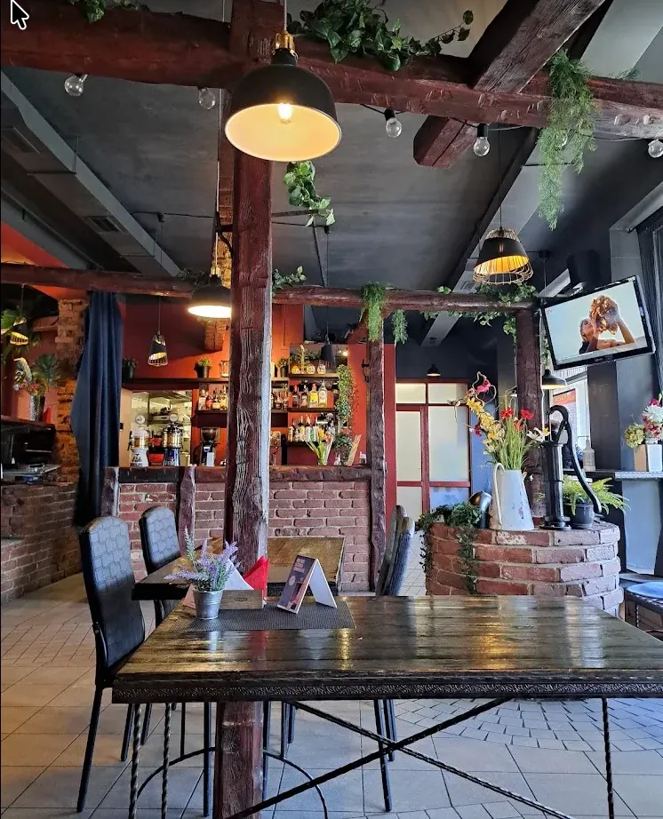
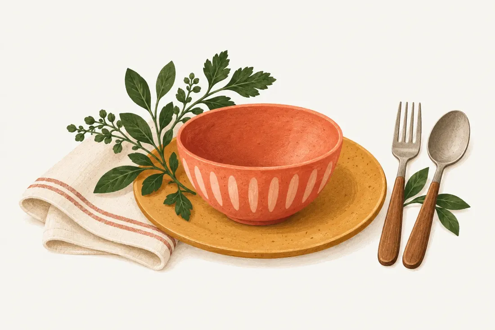

Jūsų vieta Petrašiūnuose
Pietūs ir šventės
Atsinaujinusi kavinė Kokočia Jus kviečia! Šilta ir draugiška aplinka, jaukus interjeras.
Kasdieniams pietums.
Jūsų susitikimams ir šventėms.

Sotus kąsnis✳Jaukūs pokalbiai✳Geros progos
01 / Apie mus
Maistas Jūsų progai

Kokočios virtuvėje vietos yra ir kasdieniams pietums, ir šventiniam stalui.
Maistas skanus, šviežias, papuoštas ir supakuotas.
Ruošiame banketus bei furšetus, taip pat patiekalus išsivežti į Jūsų šventės vietą. Užsukite papietauti ar susitikti prie bendro stalo.
Pasitarkime dėl Jūsų šventės ↗02 / Iš arčiau